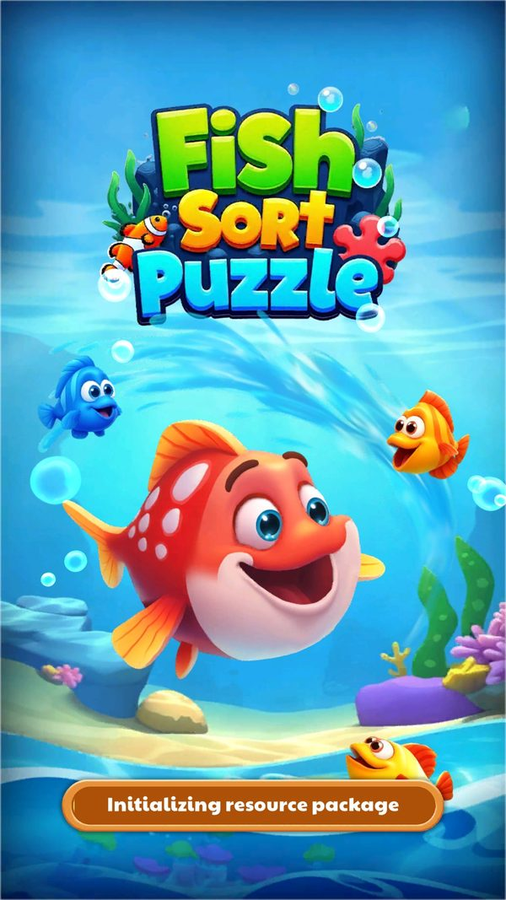
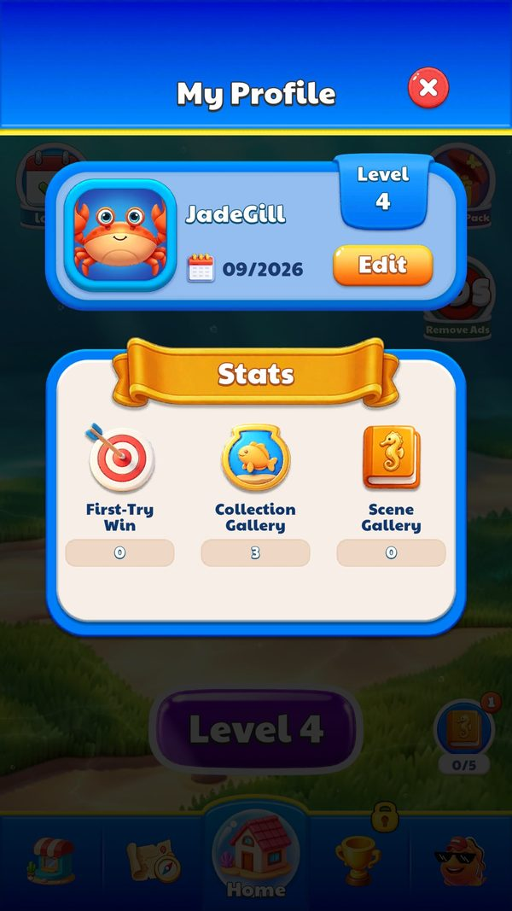
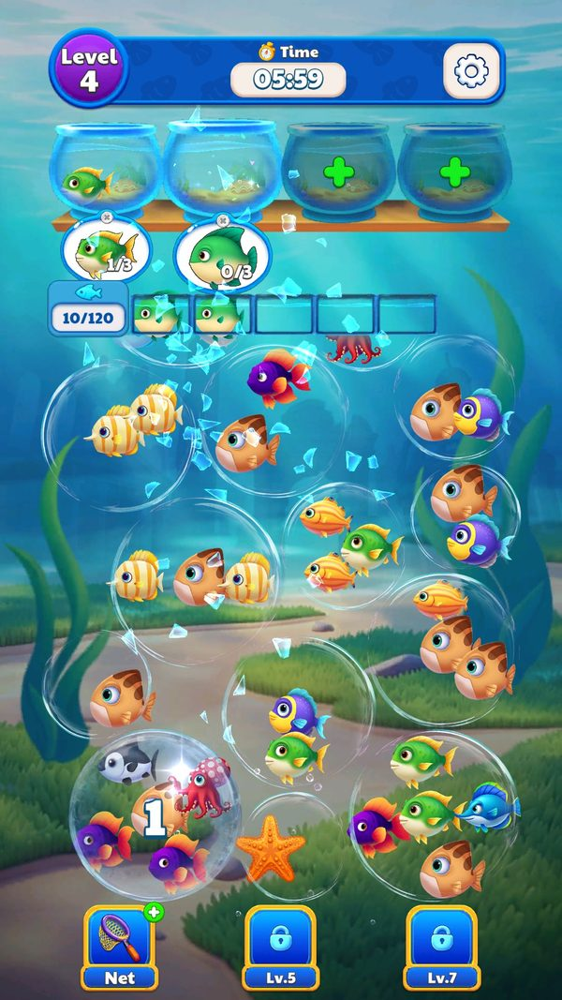

A/B nội dung màn chơi, đo lường và dữ liệu trực tuyến
level_test chọn bộ màn nào, ba nhánh PlayConfig khác nhau ra sao, đo lường đọc được gì, cloud save giữ gì và bảng xếp hạng tin client tới đâu.
Bài này gom mọi phần “trực tuyến” còn lại của game: thử nghiệm A/B bộ màn, số liệu gửi về nhà phát hành, cloud save và bảng xếp hạng. Đọc khoảng 7 phút. Ví dụ xuyên suốt là hành trình thật của JadeGill từ ngày cài 12/09 tới 06/10.
- ✅ Giá trị thật: lấy thẳng từ code, config server thật, save hoặc ảnh chụp khi chơi.
- 🧪 Ví dụ minh họa: con số đầu vào giả định để thấy cơ chế chạy; cách tính trong ví dụ là cách tính thật trong code.
- Tên kỹ thuật (class, method, key) để trong ngoặc hoặc ở dòng bằng chứng, để tra code khi cần.
Tóm tắt nhanh
- Có 7 slot bảng màn, 3 slot rỗng. Bảng gốc 1.300 màn luôn có; bộ 2, 5, 6 ghi đè một phần.Ví dụ ✅ LevelConfig2: 208 màn (3–250); LevelConfig5: 1 màn (14); LevelConfig6: 350 màn (201–900); bộ 1, 3, 4 rỗng.
- Mỗi bảng ghi đè đi theo một lịch cơ chế. Bảng gốc khớp nhánh 1 của PlayConfig, LevelConfig2 khớp nhánh 2.Ví dụ ✅ Bong bóng xích: bảng gốc từ level 11, LevelConfig2 từ level 7 — đúng StartLevel1 = 11, StartLevel2 = 7.
- LevelConfig2 gần như giữ nguyên độ lớn màn. Chỉ level 3 và 4 đổi độ lớn cho nhau.Ví dụ ✅ Bảng gốc level 4 = 360 giây, 99 cá; LevelConfig2 level 4 = 420 giây, 120 cá. 206/208 màn cùng số cá.
- Máy khảo sát đang ở nhánh LevelConfig2. Đồng hồ và số cá đo trên máy chỉ khớp bảng này.Ví dụ ✅ Level 4 ngày 06/10: đồng hồ 07:00, bộ đếm 0/120.
- Chưa nối được giá trị server với bảng màn. Ngày 12/09 server trả level_test = 5, nhưng ngày 06/10 máy chạy bảng 2.Ví dụ ✅ Bộ 5 chỉ đổi level 14; với level_test = 5 lẽ ra level 4 phải là bảng gốc (360 giây).
- Đo lường đọc được chỉ là thời lượng. 7 sự kiện lúc khởi động, cứ 30 giây gửi “đang chơi”.Ví dụ ✅ game_start gửi mode_level 1, mode_name “Main”, game_name “TestAPP”.
- Bảng xếp hạng tin hoàn toàn vào client. Điểm (số màn đã vượt), tên, avatar, quốc gia đều do client điền.Ví dụ 🧪 Client sửa PassCount thành 700 → vượt người đứng đầu toàn cầu (666 màn, đo 12/09).
Ví dụ xuyên suốt: hành trình trực tuyến của JadeGill (12/09 → 06/10)
✅ Máy LDPlayer, tài khoản test JadeGill. Ngày 12/09 đọc log khởi động và gọi API thật; ngày 06/10 chơi tới level 4 và đọc save bằng root. Hai dòng cuối là 🧪 giả định khi lên level 20.
| Lúc | Người chơi làm gì | Game / server phản hồi | Kết quả |
|---|---|---|---|
| 12/09, lần mở đầu | Mở game | Gửi start_first (chỉ 1 lần), start, mode_start | ✅ game_name = “TestAPP” |
| 12/09 | — | Server trả 17 tham số, trong đó level_test = 5 | ✅ log getOnlineConfigParams |
| 12/09 | — | Kéo cloud save với khoá CLOUD_DATA_KEY | ✅ code −10 “data empty” — tài khoản mới chưa có bản lưu |
| 12/09 | Vào level 1 | game_start (mode_level 1), rồi cứ 30 giây gửi gaming / mode_gaming / level_gaming | ✅ _duration = 30 |
| 12/09 | (gọi API tay) | /global và /country?countryCode=vn trả 100 dòng; /me trả −1 / −1 / 0 | ✅ top toàn cầu 666 → 335 màn; top VN 666 → 138; mã “VN” viết hoa trả rỗng |
| 06/10 | Mở game | Đã từng kéo cloud | ✅ Save: CLIENT_CLOUD_DATA_KEY = {"isPull":true} |
| 06/10 | Vào level 4 | Đồng hồ 07:00, 120 cá | ✅ khớp LevelConfig2 (420 giây, 120 cá), không khớp bảng gốc (360 giây, 99 cá) |
| 06/10 | Bấm tab Leaderboard | “Reach Level 20 to unlock” | ✅ khoá theo tham số Leaderboard = 20 |
| Giả định: thắng level 20 | Thắng màn | Client gửi điểm (PassCount) kèm tên JadeGill, avatar, khung, mã quốc gia | 🧪 PassCount ≈ 20 → chưa vào top 100 VN (thấp nhất 138) |
| Giả định: sửa client | Gửi PassCount = 700 | Server nhận nguyên giá trị, không token, không chữ ký | 🧪 đứng đầu bảng toàn cầu (đang là 666) |
Nhánh A/B đổi được bố cục màn người chơi đang chơi, nhưng không có dòng nào cho thấy nhánh đó được ghi vào số liệu gửi đi — nhà phát hành khó so sánh hai nhánh. Còn bảng xếp hạng, thứ duy nhất có “người thật”, lại dễ bị làm giả nhất.





Ảnh chụp minh họa (4)
Ảnh chụp từ game thật trên LDPlayer. Bấm ảnh để phóng to, phím ← → để chuyển ảnh.



Luồng hoạt động (10 bước)
Tóm lại: mở game → nhận nhánh A/B (level_test) → nạp bảng gốc + bảng ghi đè → chơi theo lịch cơ chế của nhánh → gửi số liệu thời lượng → đẩy cloud save → thắng màn → gửi điểm bảng xếp hạng
- 1Nhận nhánh A/BServerServer trả level_test; game tách thành số nhánh và hậu tố chữ.Ví dụ ✅ 12/09: level_test = 5 → LevelTest 5, LevelTestEx rỗng. Mặc định client = 0.
SDKManager.aJtµe; SDKManager.SetLevelTest; config_default_vs_live.json - 2Nạp bảng mànClientBộ nạp biết 7 đường dẫn bảng màn. Bảng gốc luôn có; bảng của nhánh ghi đè các màn trùng số (suy luận — hàm chọn bị làm rối tên).Ví dụ ✅ Đường dẫn Assets/AssetRes/Configs/Custom/LevelConfig, LevelConfig1 … LevelConfig6, khớp 7 file trên đĩa.
LevelConfig.tM^¼Â / ba«°c / ¾ÀNÁc - 3Tra màn hiện tạiClientLevel vượt tổng số màn thì chỉ số tra cứu quay vòng về màn 5 trở đi (suy luận: dùng chung khi tra cấu hình màn; tài liệu tính năng đang ghi “không lặp màn”).Ví dụ 🧪 Level 1.301 → ((1.301 − 5) mod 1.296) + 5 = màn 5; level 1.302 → màn 6.
¨z¼Á.^HF£ (RVA 0x1208308), ¨z¼Á.²PYqd (RVA 0x1208344) - 4Chơi theo lịch cơ chế của nhánhClientBố cục màn trong bảng của nhánh đã được dựng sẵn theo lịch PlayConfig tương ứng.Ví dụ ✅ Lần đầu có bong bóng xích: level 11 (gốc) / level 7 (nhánh 2); bong bóng ẩn: 20 / 12; cá ẩn: 51 / 30; đơn đếm ngược: 29 / 20.
PlayConfig.json; BubbleConfig_*.json và BubbleConfig_*_2.json - 5Gửi số liệu bắt đầu mànClientBắt đầu màn gửi game_start; sau đó cứ 30 giây gửi ba sự kiện thời lượng.Ví dụ ✅ game_start = {model_level_param1: 1, model_level_param5: 1, mode_level: 1, mode_name: “Main”, game_name: “TestAPP”}.
facts/runtime/server-config.md mục 5; SDKManager.game_start → ReportManager.NewReportGameStart - 6Gửi số liệu kết thúc mànClientCode có sẵn hàm báo thắng, thua, bỏ, hồi sinh và báo quảng cáo, nhưng chưa bắt được payload thật.Ví dụ 🧪 Thua level 4 rồi hồi sinh bằng quảng cáo → lẽ ra có game_revive và video_click → video_play → video_success.
SDKManager.game_complete, game_fail, game_quit, game_revive; TrackVideo - 7Chuyển số liệu điServerSDK Java xếp hàng sự kiện, mã hoá rồi đẩy lên máy chủ thống kê với đường dẫn đổi theo từng lần gửi.Ví dụ ✅ Máy chủ jajsy.pareci.net:8607; file đếm ghi encrypt_success_count = 88.
gdd/Analytics.json; facts/runtime/raw/encrypt_statistics_file - 8Đẩy cloud saveClientSau màn và giao dịch, game gửi bản lưu 14 trường lên một khoá duy nhất.Ví dụ 🧪 JadeGill đặt Knight → bản cloud có exhibitionId 1, architectureIds [1], tickCount 20 (suy luận tickCount = vé cá).
GameCloud.UploadCloudArchive; GameCloud.f{bxo (“游戏数据上传成功/失败”) - 9Kéo cloud save lúc mở gameServerCó thử lại nhiều lần; khôi phục thì ghi đè save trên máy rồi khởi động lại game ngay trong app.Ví dụ ✅ 12/09: code −10 (chưa có bản lưu). 06/10: isPull = true. Settings không có nút cloud save — mọi thứ chạy ngầm.
GameCloud.Init / Update (“尝试第{0}次获取云数据”); CLIENT_CLOUD_DATA_KEY; Boot.ReInitGame - 10Gửi điểm bảng xếp hạngServerThắng màn thì gửi số màn đã vượt cùng hồ sơ hiển thị. Xem bảng thì gọi top toàn cầu, top quốc gia và hạng của mình.Ví dụ ✅ /me trước khi gửi điểm trả globalRank −1, countryRank −1, totalPassCount 0. Mã quốc gia phải viết thường (“vn”).
SubmitPassRequest; UIPanelRank; Leaderboard = 20; facts/runtime/api/

Nhánh & ngoại lệ
| Khi | Thì | Ví dụ | Bằng chứng |
|---|---|---|---|
| level_test = 0 hoặc server im lặng | Chỉ dùng bảng gốc với lịch nhánh 1 (suy luận). | 🧪 Người chơi mới mất mạng lúc mở game → gặp bong bóng xích ở level 11 thay vì level 7. | SDKManager.SetLevelTest; mặc định level_test = 0 |
| level_test trỏ vào slot rỗng (1, 3, 4) | Không có dòng ghi đè, người chơi nhận bảng gốc (suy luận). | ✅ LevelConfig1/3/4.json rỗng. | Configs/Custom/LevelConfig1/3/4.json |
| Bảng 5 hoặc 6 ghi đè cả dòng | Hai bảng này không có trường trọng số quảng cáo và khoảng tiến độ; nếu ghi đè nguyên dòng thì các màn đó có loại “ép 3 lần” nhưng 0 khoảng, tức không có điểm ép (suy luận cần kiểm chứng). | ✅ LevelConfig6 level 201 chỉ có LevelID, BubbleDataStr, LevelTime, LevelDifficulty, CountdownTargetProgress, IsFishRay, BranchObstacle. | LevelConfig5.json, LevelConfig6.json; LevelConfig.Y¼¢gg |
| Hết 1.300 màn | Cấu hình chạy lại từ màn 5 (suy luận). | 🧪 Level 1.305 dùng cấu hình màn 9. | ¨z¼Á.²PYqd |
| Đổi máy | Về lại level, vàng, booster, Starter Pack, vé, khu trưng bày, hồ sơ, thành tựu. Mất điểm danh, sự kiện, thu thập, hướng dẫn, bộ đếm quảng cáo, No Ads, mạng, Búa, x2. | 🧪 JadeGill đổi máy → về lại level 4, 140 vàng, Knight; nhưng NoAdCount về 0 và cờ đã xem hướng dẫn Lưới về false. | CloudData 14 trường; playerprefs_2026-10-06.json |
| Gửi mã quốc gia viết hoa | Bảng quốc gia trả rỗng. | ✅ /country?countryCode=VN → []; “vn” → 100 dòng. | facts/runtime/api/rank_country_countryCode_VN.json |
| Client sửa điểm | Server nhận nguyên giá trị; không phân biệt điểm thật và giả. | 🧪 PassCount = 700 → vượt người đứng đầu (666). | SubmitPassRequest; facts/runtime/server-config.md mục 2 |
Bảy slot bảng màn
| File | Số màn | Phạm vi | Khác bảng gốc | Nhánh PlayConfig | Ví dụ |
|---|---|---|---|---|---|
| LevelConfig.json | 1.300 | 1–1.300 | — | StartLevel1 (khớp lịch) | ✅ level 4 = 360 giây, 99 cá |
| LevelConfig1.json | 0 | — | rỗng | — | — |
| LevelConfig2.json | 208 | 3–250 | 202 bố cục khác, 84 màn đổi đơn đếm ngược, level 3 ↔ 4 đổi độ lớn; 206 màn cùng số cá | StartLevel2 (khớp lịch) | ✅ level 4 = 420 giây, 120 cá; level 20 có đơn đếm ngược, bảng gốc thì không |
| LevelConfig3.json | 0 | — | rỗng | — | — |
| LevelConfig4.json | 0 | — | rỗng | — | — |
| LevelConfig5.json | 1 | 14 | bố cục khác, cùng 144 cá, cùng 360 giây | chưa rõ | ✅ BubbleConfig_14_5 |
| LevelConfig6.json | 350 | 201–900 | +815 cá ở 101 màn, tia cá ở 111 màn, chướng ngại cành cây ở 15 màn (801–898); thời gian và độ khó giữ nguyên | StartLevel3 (suy luận) | ✅ level 201 = BubbleConfig_201_6, bật tia cá |
Ba nhánh lịch cơ chế (PlayConfig)
Tóm lại: nhánh 1 chậm → nhánh 2 dồn sớm 4 cơ chế đầu → nhánh 3 bỏ 3 cơ chế, thêm 5 cơ chế riêng
Chỉ liệt kê cơ chế có mốc khác nhau giữa các nhánh; 0 nghĩa là nhánh đó không có cơ chế.
| PlayType | Cơ chế | Nhánh 1 | Nhánh 2 | Nhánh 3 | Ví dụ |
|---|---|---|---|---|---|
| 2 | Bong bóng xích | 11 | 7 | 7 | ✅ bố cục LevelConfig2 có xích từ level 7 |
| 3 | Bong bóng ẩn | 20 | 12 | 12 | ✅ LevelConfig2: lần đầu ở level 12 |
| 4 | Đơn hàng đếm ngược | 29 | 20 | 20 | ✅ LevelConfig2: lần đầu ở level 20 |
| 5 | Cá ẩn | 51 | 30 | 30 | ✅ LevelConfig2: lần đầu ở level 30 |
| 6 | Bong bóng xoáy | 151 | 51 | 51 | — |
| 8 | Cá bị trói | 201 | 151 | 151 | — |
| 9 | Cá đóng băng | 251 | 201 | 0 | — |
| 11 | Bong bóng băng dính | 401 | 401 | 0 | — |
| 13 | Cá trong lồng | 601 | 601 | 0 | — |
| 14 | Cá quỷ | 0 | 0 | 201 | 🧪 nhánh 3 gặp ở level 201, cùng điểm bắt đầu của LevelConfig6 |
| 15 | Bong bóng thuỷ triều | 0 | 0 | 401 | — |
| 16 | Cá vạn năng | 0 | 0 | 601 | — |
| 17 | Cá giữ chỗ | 0 | 0 | 701 | — |
| 18 | Chướng ngại cành cây | 0 | 0 | 801 | ✅ LevelConfig6: chướng ngại cành cây từ level 801 |
Bằng chứng máy đang ở nhánh LevelConfig2
| Quan sát 06/10 | Bảng gốc | LevelConfig2 | Kết luận |
|---|---|---|---|
| Đồng hồ level 4: 07:00 | 360 giây | 420 giây | ✅ khớp LevelConfig2 |
| Số cá level 4: 120 | 99 cá (BubbleConfig_4) | 120 cá (BubbleConfig_4_2) | ✅ khớp LevelConfig2 |
| level_test đọc ngày 12/09 | — | — | = 5: hoặc server đã đổi giá trị, hoặc ánh xạ không phải 1–1 (chưa đọc lại tham số ngày 06/10) |
Đo lường: đọc được gì, thiếu gì
- Tên game trong số liệu vẫn là placeholder. Dữ liệu dễ lẫn với app khác của cùng nhà phát hành.Ví dụ ✅ ZMYSDKAPPGlobalConfig.json: gameName = “TestAPP”.
- Chưa thấy nhánh A/B trong payload nào. Ý nghĩa model_level_param1/5 chưa xác định.Ví dụ ✅ 12/09 level_test = 5 nhưng game_start gửi model_level_param5 = 1.
- Còn Firebase Analytics và AppsFlyer chạy song song. Bộ sự kiện của chúng chưa khảo sát.Ví dụ ✅ Nhận diện qua databases và shared_prefs trên máy.
| Sự kiện / hàm | Trạng thái | Tham số | Ví dụ |
|---|---|---|---|
| start_first, start | đã đọc payload | game_name | ✅ start_first chỉ gửi 1 lần sau khi cài |
| mode_start | đã đọc payload | mode_name, game_name | ✅ mode_name = “Main” |
| game_start | đã đọc payload | model_level_param1, model_level_param5, mode_level, mode_name, game_name | ✅ mode_level = 1 ở màn đầu |
| gaming, mode_gaming, level_gaming | đã đọc payload, mỗi 30 giây | _duration, mode_name, mode_level, game_name | 🧪 chơi 7 phút → 14 lần × 3 sự kiện |
| game_complete, game_fail, game_quit, game_revive | có trong code, chưa bắt được | 9–10 tham số số nguyên | — |
| activity_unlock / start / complete / reward | có trong code, sự kiện đang tắt | tên sự kiện, level, chặng, hạng | — |
| item_get / item_cost | có trong code | mã vật phẩm, số lượng, nguồn | ✅ nguồn có GetItem_Ad, GetItem_Coin, GameReward, GameUse |
| TrackVideo | có trong code | video_click / video_play / video_success, video_name | — |
Cloud save và bảng xếp hạng
- Cloud save giữ 14 trường cốt lõi. level, vàng, số booster, cờ Starter Pack, tick, khu, công trình, tên, avatar, khung, ngày vào game, thành tựu.Ví dụ ✅ Ba trường tipItemId/clearItemId/refreshItemId đặt tên như id nhưng chứa số lượng booster.
- Nhiều thứ không theo cloud. Điểm danh, sự kiện, thu thập, hướng dẫn, bộ đếm quảng cáo, No Ads, mạng, Búa, x2.Ví dụ 🧪 Mua No Ads 210.000₫ rồi đổi máy → quảng cáo pop-up quay lại tới khi bấm Restore.
- Bảng xếp hạng chỉ trả 100 dòng. Có bảng toàn cầu và bảng quốc gia.Ví dụ ✅ 12/09: toàn cầu 666 → 335 màn; VN 666 → 138 màn.
- Gửi điểm không xác thực. Không token, không chữ ký; còn có cả endpoint xoá điểm.Ví dụ ✅ SubmitPassRequest = PlayerId, UserName, AvatarId, FrameId, CountryCode, PassCount — client điền hết.
- Không phân biệt được bot và người chưa đổi tên. 100 tên top toàn cầu đều ghép từ bộ tên tự sinh.Ví dụ ✅ Chính tài khoản test cũng tên JadeGill = Jade + Gill.
Số liệu chính
| Chỉ số | Giá trị | Số liệu do | Nguồn |
|---|---|---|---|
| Slot bảng màn | 7 (3 rỗng) | Client | LevelConfig.c; Configs/Custom/LevelConfig*.json |
| Tổng dòng cấu hình màn | 1.859 (1.300 + 208 + 1 + 350) | Client | appendix/levels-summary.md |
| LevelConfig2 giữ nguyên số cá | 206 / 208 màn | Client | so BubbleConfig_<n> với BubbleConfig_<n>_2 |
| LevelConfig6 thêm cá | +815 cá ở 101 / 350 màn | Client | so BubbleConfig_<n> với BubbleConfig_<n>_6 |
| level_test | live 5 (12/09) · mặc định 0 | Server | config_default_vs_live.json |
| Bảng màn máy đang chạy | LevelConfig2 (06/10) | Đo trên máy | feature_extras.json LevelProgression.observed |
| Sự kiện analytics đọc được | 7, nhịp 30 giây | Đo trên máy | facts/runtime/server-config.md mục 5 |
| Trường CloudData | 14 | Client | CloudData (dump.cs) |
| Bảng xếp hạng | 100 dòng; top toàn cầu 666 → 335 | Server | facts/runtime/api/rank_global.json |
Đánh giá
Thang 1–5 (với tiêu chí rủi ro, 5 = rủi ro cao). Trung bình: 2.2.
| Tiêu chí | Điểm | Nhận xét |
|---|---|---|
| Hạ tầng A/B nội dung | 3/5 | Có slot, có chọn nhánh từ server, bảng biến thể dựng kỹ (xích từ level 7 thay vì 11); nhưng chưa A/B được độ dài, thời gian hay kinh tế. |
| Khả năng đo kết quả A/B | 1/5 | Chưa thấy nhánh trong analytics; game_name là “TestAPP”; sự kiện đọc được chủ yếu là thời lượng. |
| Toàn vẹn dữ liệu người chơi | 2/5 | Cloud giữ phần cốt lõi nhưng bỏ cờ No Ads (210.000₫) và mọi state LiveOps. |
| An toàn bảng xếp hạng | 1/5 | Không xác thực điểm; ví dụ PassCount 700 là đứng đầu ngay. |
| Rủi ro | 4/5 | Nhảy nhánh màn khi mất cấu hình, bảng ghi đè thiếu trường quảng cáo, bảng xếp hạng dễ bị gian lận. |
- Biến thể màn dựng nhất quán với lịch cơ chế của nhánh — A/B được làm từ khâu nội dung chứ không chỉ đổi số.
- Mọi dữ liệu nằm trong APK nên thử nghiệm không phụ thuộc CDN; chỉ cần một chuỗi để chuyển nhánh.
- Log SDK đủ để kiểm nhánh và tham số ngay trên máy.
- Ba slot rỗng và một slot chỉ 1 màn: dấu vết thử nghiệm cũ chưa dọn.
- LevelConfig5/6 thiếu trường quảng cáo, có thể làm lệch mô hình điểm ép ở nhánh đó.
- Không có cơ chế giữ cố định nhánh A/B phía client.
- Kết luận A/B sai vì số liệu không tách được theo nhánh, hoặc lẫn với app khác cùng game_name “TestAPP”.
- Gian lận đẩy điểm lên đầu bảng làm mất giá trị bảng xếp hạng — hệ thống xã hội duy nhất của game.
- Gửi LevelTest/LevelTestEx trong mọi sự kiện analytics (ví dụ thêm “ab_level”: “5”) và sửa game_name trong ZMYSDKAPPGlobalConfig.json.
- Nhớ nhánh A/B lần đầu vào PlayerPrefs và CloudData; chỉ đổi khi server gửi lệnh chuyển rõ ràng.
- Bổ sung trường quảng cáo cho LevelConfig5/6 hoặc đổi cách ghi đè sang từng trường.
- Xác thực điểm ở server: ví dụ mỗi màn ≥ 60 giây, tối đa +50 màn mỗi ngày, có chữ ký request; bỏ /reset khỏi client.
- Đưa SIGN_DATA_KEY, ACTIVITY_DATA_KEY, COLLECTION_DATA_KEY và IsBuyNoAdv vào CloudData.
Liên quan
Tiến trình và dữ liệu màn 18 cơ chế và chướng ngại Cơ chế chơi trong màn Thống kê và báo cáo Lưu trữ đám mây Bảng xếp hạng server Tích hợp SDK nhà phát hành Quảng cáo 📊 17 tham số online của ZMYSDK 📊 Mô hình quảng cáo: trọng số theo màn, điểm ép và cổng insert_test 📊 Các vòng lặp giữ chân ngoài màn chơi
Nguồn đã đọc
gdd/LevelProgression.json, gdd/PlayMechanics.json, gdd/Analytics.json, gdd/CloudSave.json, gdd/Rank.jsonappendix/levels-summary.md, appendix/default-configs.md (PlayConfig)feature_extras.json (LevelProgression, LevelGameplay, CloudSave)screenshots/level4_start.jpg, level4_ice_crack.jpg, rank_locked_level20.jpg, settings_panel.jpg, profile_my_profile.jpg, boot_*.jpgfacts/runtime/server-config.mdfacts/runtime/decoded/config_default_vs_live.json, server_config_live.json, playerprefs.json, playerprefs_2026-10-06.jsonfacts/runtime/api/ (rank_global.json, rank_country_vn.json, rank_country_countryCode_VN.json)Configs/Custom/LevelConfig.json, LevelConfig1–6.json, BubbleConfig_*.jsonfeatures/LevelConfig.md, SDKManager.md, GameCloud.mdPseudoC/Assembly-CSharp/SDKManager.c (SetLevelTest, game_*, TrackVideo)PseudoC/Assembly-CSharp/¨z¼Á.c (^HF£, ²PYqd)